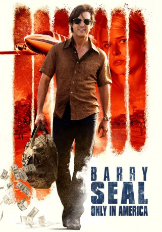
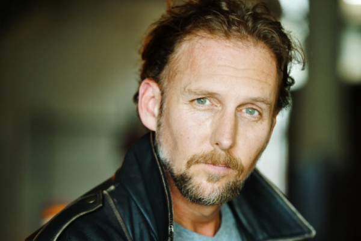
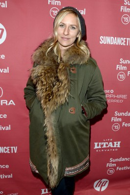

#7730 Barry Seal: Only in America
Alternativ: American Made
 
 IMDB-Wertung: 7.2 / 10
IMDB-Wertung: 7.2 / 10  Metascore: 65
Metascore: 65 
Einst war Barry Seal ein Pilot der amerikanischen TWA-Fluggesellschaft. Doch als die 1980er Jahre anbrechen, wird aus dem zuvor ehrenwerten Mann ein Drogenschmuggler. Gewinnbringend arbeitet er mit Drogenlords in Nicaragua zusammen und wird damit reich. Dann allerdings fliegen Barrys illegale Geschäfte auf. Um einer Verurteilung zu entgehen, lässt er sich von der Drogenabteilung der CIA anheuern, um das Medellín Cartel auszuspionieren. Seine Schmugglertätigkeit gibt Seal trotzdem nicht auf.
Jahr: 2017
Dauer: 114 Minuten
FSK: 12
Land: USA Studio: Universal PicturesTonspuren: DTS - ,
Untertitel: Deutsch, Englisch,
Auflösung: 1080p (1920x1040) Größe: 8058 MB
Genre: Action, Thriller, Drama, Komödie, Krimi, Geschichte, Biographie
Regisseur:  Doug Liman
Doug Liman
Drehbuch: Gary Spinelli
Soundtrack: Christophe Beck
Darsteller:
 Tom Cruise als Barry Seal
Tom Cruise als Barry Seal Domhnall Gleeson als Monty 'Schafer'
Domhnall Gleeson als Monty 'Schafer' Sarah Wright als Lucy Seal
Sarah Wright als Lucy Seal Jesse Plemons als Sheriff Downing
Jesse Plemons als Sheriff Downing- Caleb Landry Jones als JB
 Lola Kirke als Judy Downing
Lola Kirke als Judy Downing Jayma Mays als Dana Sibota
Jayma Mays als Dana Sibota- Alejandro Edda als Jorge Ochoa
 Benito Martinez als James Rangel
Benito Martinez als James Rangel E. Roger Mitchell als Agent Craig McCall
E. Roger Mitchell als Agent Craig McCall- Jed Rees als Louis Finkle
- Robert Farrior als Oliver North
- Morgan Hinkleman als Christina
-  Jayson Warner Smith als Bill Cooper (Snowbird #1)
 William Mark McCullough als Pete (Snowbird #2)
William Mark McCullough als Pete (Snowbird #2)- April Billingsley als Stewardess
- Lauren Boyd als Secretary
- Lauren Revard als Teller
 Marcus Hester als Parka
Marcus Hester als Parka Mike Pniewski als Willie (State Police)
Mike Pniewski als Willie (State Police)- Frank Licari als DEA Agent #1
 Alex Collins als ATF #1
Alex Collins als ATF #1 Scott Poythress als ATF #2
Scott Poythress als ATF #2- Connor Trinneer als George W. Bush / Texan
- Alpha Trivette als Judge Linkletter
- Kevin L. Johnson als Agent Horace Wainwright
- DeVere Jehl als Plain Clothed Man
- Tony Guerrero als Federico Vaughan
 Maria Howell als NSC Woman
Maria Howell als NSC Woman- Darla Delgado als Customs Agent
 Justice Leak als DEA Agent Winter
Justice Leak als DEA Agent Winter Robert Pralgo als Gary (Cubicle Mate)
Robert Pralgo als Gary (Cubicle Mate)-  Mickey Sumner als North's Aide Fawn Hall
- Daniel Thomas May als CIA Man
- Daniel Diaz als Sandinista Soldier
- Carlos Lopez Jr. als CIA Station Chief
- Stephen Conroy als Military Police / Advisor
- Emmy Allin als Flight Attendant Anna (uncredited)
 John L. Armijo als Honduran Soldier (uncredited)
John L. Armijo als Honduran Soldier (uncredited) Jon Arthur als Federal Agent (uncredited)
Jon Arthur als Federal Agent (uncredited)- Se Ba als Motel Girl (uncredited)
 Brett Beoubay als DEA Agent (uncredited)
Brett Beoubay als DEA Agent (uncredited)- Bill Billions als Radar Op. #1 (uncredited)
- Carter Birchwell als Young Dean (uncredited)
 Bradley Bowen als US Customs Officer Cunningham (uncredited)
Bradley Bowen als US Customs Officer Cunningham (uncredited)- Cuyle Carvin als Phil (uncredited)
 Sharon Conley als DEA Agent Grace (uncredited)
Sharon Conley als DEA Agent Grace (uncredited) Steve Coulter als Buzz Sawyer (Snowbird #4) (uncredited)
Steve Coulter als Buzz Sawyer (Snowbird #4) (uncredited)- Stephen Dean als CIA Agent (uncredited)
- Dino Dos Santos als Contra (uncredited)
Datei: X:\2017(A-F)\Barry Seal Only in America (2017, FSK12, 1920x1040).mkv seit 15.12.2017
Festplatte: HD 2017(A-Z)-2018(A-F)
 Es gibt insgesamt 152 Filme in der Gruppe '2017(A-F)'
Es gibt insgesamt 152 Filme in der Gruppe '2017(A-F)'